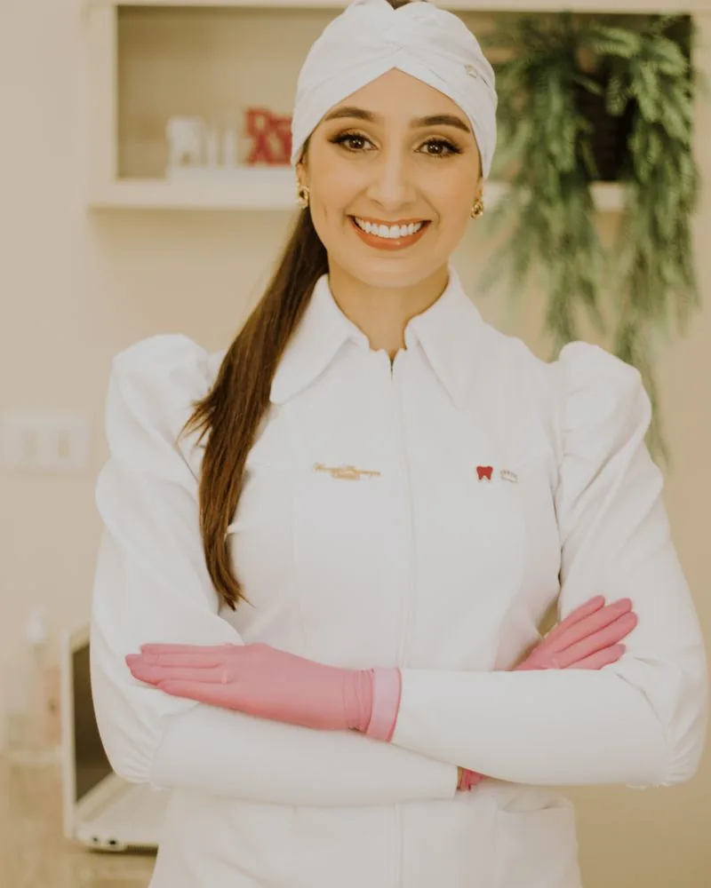

Uma clínica construída sobre precisão e escuta
A Fukuoka Dental Clinic nasceu da convicção de que odontologia de excelência exige duas coisas em igual medida: rigor técnico e tempo para entender cada pessoa.
Inspirada pela tradição japonesa, a clínica trabalha com um padrão de conduta em que o cuidado meticuloso com o detalhe não é diferencial, e sim o mínimo. Isso aparece no planejamento digital que antecede cada procedimento, na escolha por abordagens minimamente invasivas e na forma como cada etapa é explicada antes de ser executada.

A odontologia tem o poder de transformar vidas
Acreditamos que a odontologia tem o poder de transformar vidas.
Nossa missão é ajudar cada paciente a alcançar a sua melhor versão, promovendo saúde, confiança e qualidade de vida por meio de uma odontologia de excelência, baseada em ciência, tecnologia, ética e um cuidado genuinamente humano.
Na Fukuoka Dental Clinic, cada sorriso é tratado com precisão, respeito e dedicação, porque acreditamos que transformar um sorriso é também transformar a forma como uma pessoa vive, sorri e se relaciona com o mundo.

Dra. Cíntia Fukuoka
TROCAR: CRO-SP 00.000
Cada paciente chega com uma história e um motivo. O tempo dedicado a ouvir vem antes de qualquer proposta de tratamento, porque um plano só é bom quando cabe na vida de quem o recebe.
Formação e especializações
Três etapas, sem surpresas
-
Avaliação
Exame clínico, imagens e escaneamento digital, com tempo dedicado a entender o que você espera do tratamento.
-
Plano personalizado
Apresentação das opções, das etapas e dos prazos antes de qualquer decisão. Você escolhe com a informação na mão.
-
Tratamento e acompanhamento
Execução com tecnologia guiada e revisões periódicas, inclusive depois de concluído o tratamento.
O que nos guia
Nossa prática é orientada pela ética, pela transparência e pelo compromisso com a preservação da estrutura natural dos dentes.